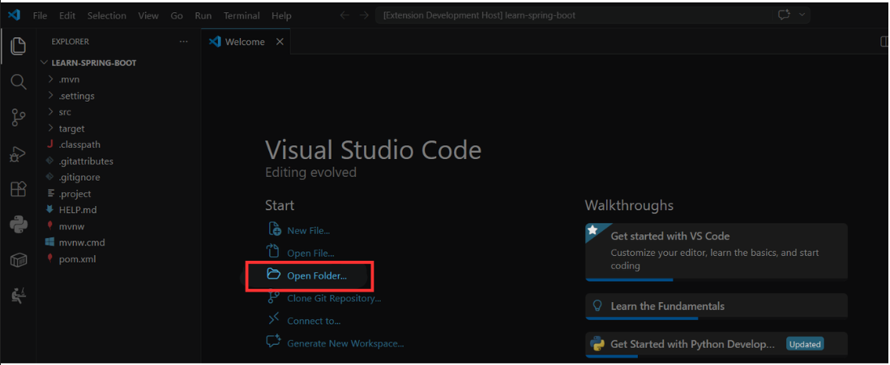
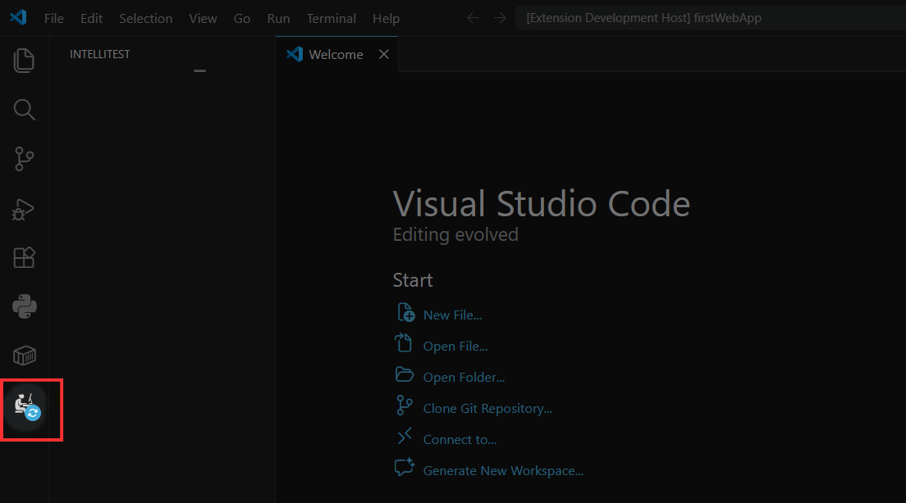
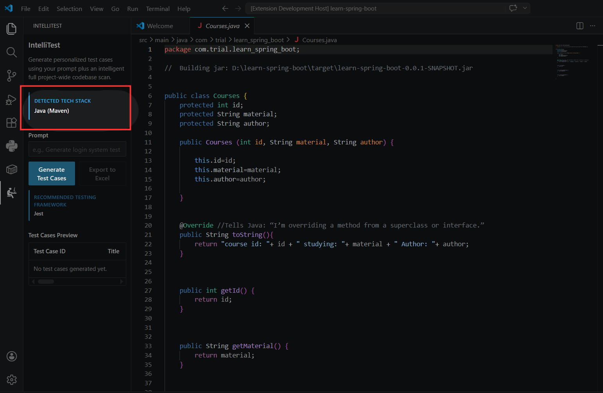
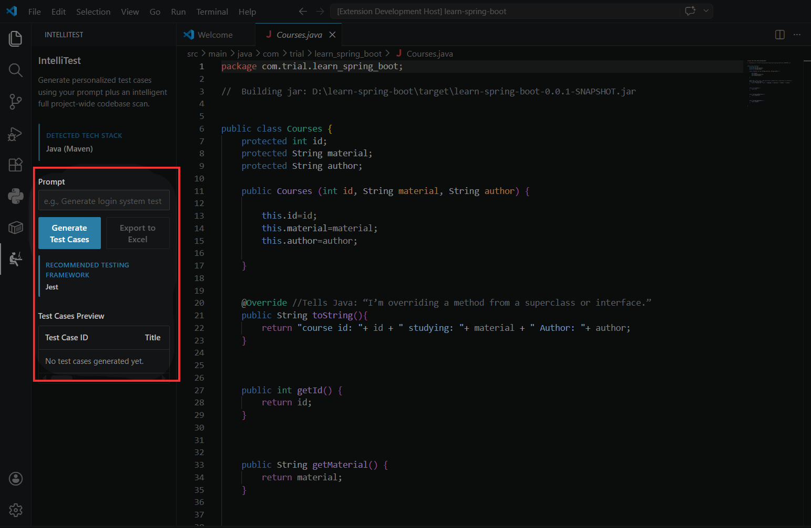

Overview
This extension automatically scans your entire codebase to understand your tech stack, dependencies, and project structure. Using a fine-tuned LLM with full repository context, it generates production-ready test scripts tailored to your specific code. Simply write your prompt, and the extension instantly generates test cases and coded scripts for any function, component, or module.
What you can do with IntelliTest
Agents handle testing tasks from start to finish, from a single function to full test suite coverage across your project.
Generate test coverage for a feature. Describe what you want to test in natural language, "write unit tests for this login handler" or "cover all edge cases in the payment validator", and the agent scans your relevant files, understands dependencies, and outputs complete test scripts.
Debug with failing test generation. Point the agent at a function that has subtle bugs and ask it to "generate tests that would catch the issues here." The agent analyzes the code, identifies potential failure points, and writes assertions that expose edge cases you might have missed.
Refactor with confidence. Ask the agent to "generate regression tests before I migrate this module from Express to Fastify." It studies the current behavior across files, creates validation tests, and gives you a safety net before you touch production code.
Export test suites for documentation. Request a full test plan in CSV format, ideal for QA handoffs, compliance documentation, or importing into test management tools like Jira or TestRail.
Collaborate via version control. The agent can generate test files directly into your project structure, ready to commit and run in your CI/CD pipeline alongside your team's existing workflows.
Getting started
Follow these five steps to install IntelliTest, open your project, and start generating tests.
-
Download IntelliTest
Install the extension from the marketplace so it is available in your VS Code sidebar.
-
Open a project
Open the codebase you want to test so IntelliTest can scan the files and understand the project structure.

-
Select the extension icon
Click the IntelliTest icon in the activity bar to open the extension panel.

-
Confirm the stack is detected
Look for the detected tech stack card so you know IntelliTest has read the framework and tooling correctly.

-
Write prompts and start testing
You are ready to describe what you want to test, generate cases, and iterate until the coverage matches your goal.

Agent
An agent is an AI testing assistant that autonomously analyzes your codebase to generate comprehensive test suites. Unlike traditional test generators that only scan a single open file, the agent takes a testing goal, "write unit tests for this authentication module" or "create integration tests for the payment flow", breaks it into steps, scans multiple files across your project for context, understands dependencies and existing patterns, and produces structured test scripts that actually run. Give the agent a prompt describing what you want to test and it gets to work. Each test generation runs inside an agent session, a persistent workflow you can track, refine with follow-up prompts, or export to CSV for documentation. The agent self-corrects based on your project's framework and file structure, delivering ready-to-run tests without manual editing.
Chat Session
How IntelliTest Chat Works
IntelliTest enables you to use natural language to generate test suites for your codebase. Ask for unit tests, integration coverage, regression scripts, or edge case validation—all through a simple conversational interface. This guide covers how to structure prompts, how the agent uses your project context, and how to review generated test outputs.
What is a test session?
A test session is your ongoing conversation with the agent, including all prompts you've written and the test scripts it has generated. Unlike other tools, IntelliTest maintains a single persistent session that remembers your entire project context—there's no need to switch between chats or restart conversations.
Key things to know about test sessions:
Persistent context. The agent continuously scans your project folder and remembers your codebase structure, dependencies, and existing test patterns across the entire session. Every new prompt builds on everything it already knows about your project.
Prompt history. You can scroll back through your previous prompts and review every test output the agent generated. Each response includes a rating option-mark whether the generated test was useful, needs adjustment, or missed the mark. This feedback helps improve future generations.
No session switching. Because there's only one continuous session tied to your project, you never lose context. Open the extension, start prompting, and the agent stays aware of everything you've asked for and every test it has produced.
Context
Context is everything the agent understands when generating your tests. It includes what it learns from scanning your project structure, the tech stack and frameworks it detects, the domain it infers from your files, and,most importantly,exactly what you ask for in your prompt. The agent can only generate meaningful tests based on what it knows about your project. That's why IntelliTest works so hard to build a complete picture before generating a single line of test code. The richer the context, the smarter the test.
- How IntelliTest Understands Your Project
-
When you open IntelliTest in your workspace, it quietly gets to work. It scans your project folder, looking for the signals that tell it what kind of project you're building. It looks for things like dependency files, configuration manifests, and folder structures, but it skips the noisy stuff like node_modules, build outputs, and version control folders.
From that scan, IntelliTest builds a high-level map of your project. It learns what programming language and framework you're using, where your main modules live, how your files are organized, and what kind of product you're building.
None of this requires looking at your actual source code. IntelliTest works from structure, metadata, and file patterns, not the contents of your proprietary logic.
Then you add your prompt. You type something like "write unit tests for the checkout flow" or "generate regression tests for the user dashboard." Your request becomes the anchor. IntelliTest combines what you asked for with what it learned about your project, sends a structured summary to the model, and receives ready-to-run test scripts in return.
- What context IntelliTest uses
-
Your tech stack. IntelliTest detects whether you're working in Node.js, Python, Java, Go, Rust, Ruby, PHP, or a containerized environment. It identifies web frameworks from the files it finds. This tells the model what syntax, conventions, and testing libraries to use.
Your testing framework. The extension looks at your package.json, pyproject.toml, pom.xml, go.mod, or similar files to recommend the right testing tools, such as Jest, Mocha, pytest, JUnit, and others. The UI reflects this recommendation, and the generated output matches your actual setup.
Your project structure. IntelliTest builds a map of your top-level modules using relative file paths. It pays attention to folders that suggest routes, pages, APIs, controllers, or endpoints. This helps the model understand where different pieces of functionality live.
Your product domain. Here's where IntelliTest gets surprisingly smart. From file names, package metadata, and even your prompt, the system can infer what kind of product you're building, such as an e-commerce store, a learning platform, a SaaS dashboard, a booking system, a healthcare application, or a real estate tool. That inference shapes the tests it generates. An e-commerce checkout needs different edge cases than a content management system.
Your prompt. Everything you type in the chat becomes the highest-priority signal. If you limit the scope to a specific feature, IntelliTest honors that. If you leave it open-ended, the system can intelligently broaden coverage. Your intent drives everything.
- Why context matters
-
Without project context, test generation is blind. You get generic scripts that might look right at a glance but fail because they import the wrong modules, mock missing dependencies, or assert against phantom variables.
With project context, IntelliTest generates tests that use your actual framework conventions, reference real module paths, cover meaningful edge cases, and run without manual cleanup because they match your testing setup.
This is the difference between generating code that looks like a test and generating code that works like a test.
Smart Folder Scanning
A typical project contains a mix of source files, generated artifacts, dependency trees, and configuration data. Only a subset of that material is useful for understanding the codebase.
IntelliTest distinguishes between relevant project signals and background noise automatically.
- What gets scanned
-
Source files. IntelliTest focuses on the files that contain application logic, including functions, components, modules, and routes. These are the primary inputs required to generate accurate tests.
Dependency manifests. Files such as package.json, pyproject.toml, go.mod, pom.xml, and Cargo.toml identify the framework and testing tools in use. They provide configuration context without introducing unnecessary noise.
Structural cues. Folders named routes, pages, api, controllers, or endpoints help IntelliTest understand project organization so generated tests reference the correct paths.
- What gets skipped automatically
-
Dependencies. The node_modules directory can contain tens of thousands of files, none of which represent the application's source code. IntelliTest excludes it completely.
Build outputs. Directories such as dist, build, out, and target are generated artifacts and do not contribute to code understanding.
Version control data. .git stores repository history rather than application logic and is therefore ignored.
Coverage and cache files. Paths such as coverage, .nyc_output, __pycache__, .next, .nuxt, .cache, venv, and .venv are excluded because they do not add meaningful context.
Sensitive files. Environment and secret files such as .env, .secret, and .key are skipped for security reasons.
- Why this matters
-
Faster scanning. By filtering out irrelevant files, IntelliTest builds context in seconds rather than minutes.
More relevant test generation. The model can focus on application code instead of library files, build artifacts, or generated output.
Cleaner inputs. The prompt, source files, and project structure combine into a focused context set that produces more reliable test output.
- No configuration required
-
IntelliTest uses built-in defaults, so there is no need to define ignore rules, maintain exclusion lists, or manually specify which folders to skip.
Open a project and begin generating tests.
Security & Privacy
IntelliTest never sends your source code to any model. The extension reads your project locally to analyze structure and build context, but what guides test generation is a structured project map , file paths, folder structure, dependency manifests, tech stack detection, and domain inference. Raw source content stays on your machine.
- Credentials and secrets
-
Certain files and folders are automatically excluded from the scanning process. These are never read, never analyzed, and never included in the project map.
.env, .secret, .key. These files typically contain environment variables, API keys, database passwords, and other sensitive credentials. IntelliTest skips them entirely to prevent accidental exposure of authentication tokens or privileged access information.
.git/. This folder stores commit history, branch information, and sometimes previously committed secrets. Excluding it ensures that historical credentials or internal references never enter the project map.
These exclusions are automatic. You do not need to configure anything.
- What is never stored or transmitted
-
Raw source code contents.
Business logic or proprietary algorithms.
Secrets, keys, or credentials from .env files.
Any file from the excluded list above.
The model receives only structured context , file names, folder paths, detected frameworks, and your prompt. That is all.
- Why this matters
-
The model receives only structured context , file paths, folder names, dependency manifests, and detected frameworks. By automatically excluding files that contain secrets, credentials, or sensitive configuration, the extension prevents accidental leakage of the information that powers your application.
What the model never sees: your keys, your tokens, your passwords, your secrets.
- Local processing
-
All scanning, analysis, and parsing occur on your local machine. The extension runs entirely within your workspace. No raw source code ever leaves your environment.
Your code is never exposed. The model sees structure, not secrets.